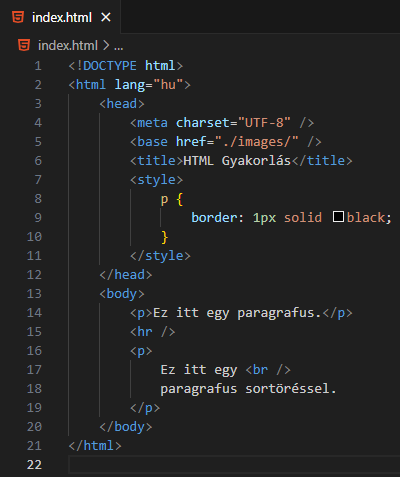
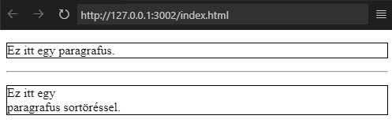
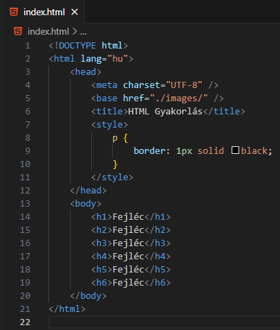
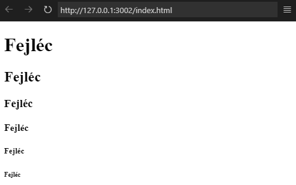

Mit lehet tudni a következő HTML elemekről: hr, br?

A fenti kód eredménye.

Látható, hogy a hr-elem egy tematikus töltést,
váltást jelent az oldalon, amelyet egy
vízszintes vonal (horizontal rule) jelöl.
A hr-elem egyike az üres elemeknek. Emellett
blokkszintű is.
A br-elem egy sortörést helyez el egy
blokkszintű elemen belül. Nem csak p-elemre
igaz. Ezt úgy tesz meg, hogy az adott elemet
osztja két részre, úgy hogy nem kezd új sort!
A br-elem is üres elem. De se nem blokkszintű se
nem beágyazott elem, mert nincs "fizikai"
kiterjedése.
Mit lehet tudni a következő HTML elemekről: h1...h6?

A fenti kód eredménye.

A HTML dokumentum struktúráját a fejléc
elemekkel tudjuk tagolni nagyobb egységekre. A
SEO-nál is lehet szerepe.
Ezek segítségével tudunk tartalomjegyzéket is
készíteni.
Készítsünk el egy weboldalt valamilyen témában (pl.kutya,
macska, autómárka) a következő szempontokat figyelembevéve!
Vegyünk négy darabot az adott témából és mindegyikhez
készítsünk egy kódegységet, melyek tartalmaznak fejlécet,
bekezdéseket és sortörést. Az egységek legyenek látható
módon elválasztva!